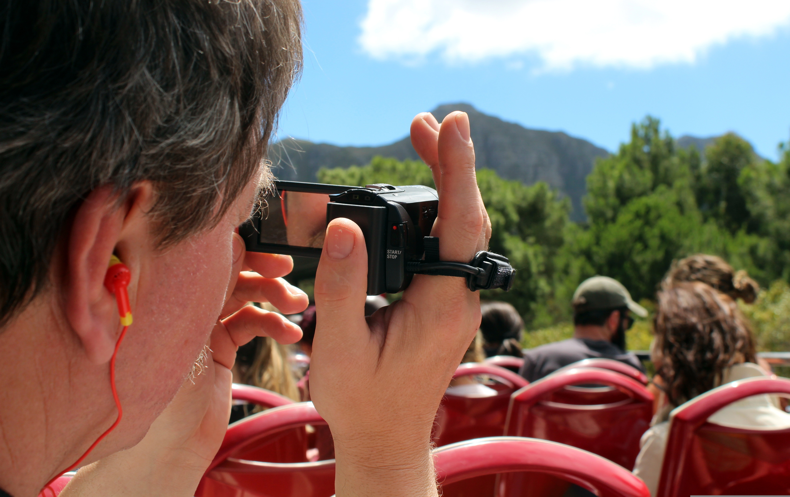

<h3 style="font-variant-numeric: normal; font-variant-east-asian: normal; font-variant-alternates: normal; font-size-adjust: none; font-kerning: auto; font-optical-sizing: auto; font-feature-settings: normal; font-variation-settings: normal; font-variant-position: normal; font-variant-emoji: normal; font-weight: 700; font-stretch: normal; font-size: 20px; line-height: 30px; font-family: quote-cjk-patch, Inter, system-ui, -apple-system, BlinkMacSystemFont, "Segoe UI", Roboto, Oxygen, Ubuntu, Cantarell, "Open Sans", "Helvetica Neue", sans-serif; margin: 32px 0px 16px; color: rgb(15, 17, 21); background-color: rgb(255, 255, 255);">Del papel a la cámara</h3>
Imagina que quieres grabar un vídeo para YouTube o TikTok sin saber qué vas a decir. Empiezas, tartamudeas, te sales del tema, te olvidas de cosas importantes y al final tienes que grabar treinta veces el mismo trozo. ¿Frustrante, verdad?
Por eso, los y las profesionales del vídeo (youtubers, periodistas, cineastas...) siempre trabajan con un guion.
Un guion es un documento donde se escribe todo lo que va a pasar en el vídeo: qué imágenes se ven, qué se dice en cada momento, cuánto dura cada parte, y qué mensaje queremos transmitir. Un buen guion te ahorra tiempo, te da seguridad y hace que el vídeo final sea mucho más profesional.
Las partes de un guion para vuestro vídeo-guía
Vuestro guion será muy sencillo. Para cada lugar que hayáis investigado en la Tarea 5, tendréis una escena. Cada escena incluirá:
| Elemento | Qué es | Ejemplo |
| Imágenes | Qué va a ver el espectador mientras habla el guía | "Plano general de la iglesia desde la plaza" / "Primer plano de la talla del santo" |
| Voz en off | El texto que grabaréis hablando | "Esta iglesia fue construida en el siglo XVI sobre una antigua mezquita..." |
| Duración aproximada | Cuánto dura esa escena (30 segundos o 1 minuto) | "30 segundos" |

El toque especial: el mensaje de turismo sostenible
No olvidéis que vuestro vídeo no es solo una lista de sitios bonitos. Cada lugar debe incluir una pequeña reflexión sobre cómo disfrutarlo sin dañarlo. Por ejemplo:
- "Podemos visitar este paraje, pero llevándonos nuestra basura y no saliéndonos de los senderos."
- "Este comercio tradicional lleva 50 años abierto. Comprar aquí es apoyar la economía local."
- "Para evitar aglomeraciones, lo mejor es venir en temporada baja o entre semana."